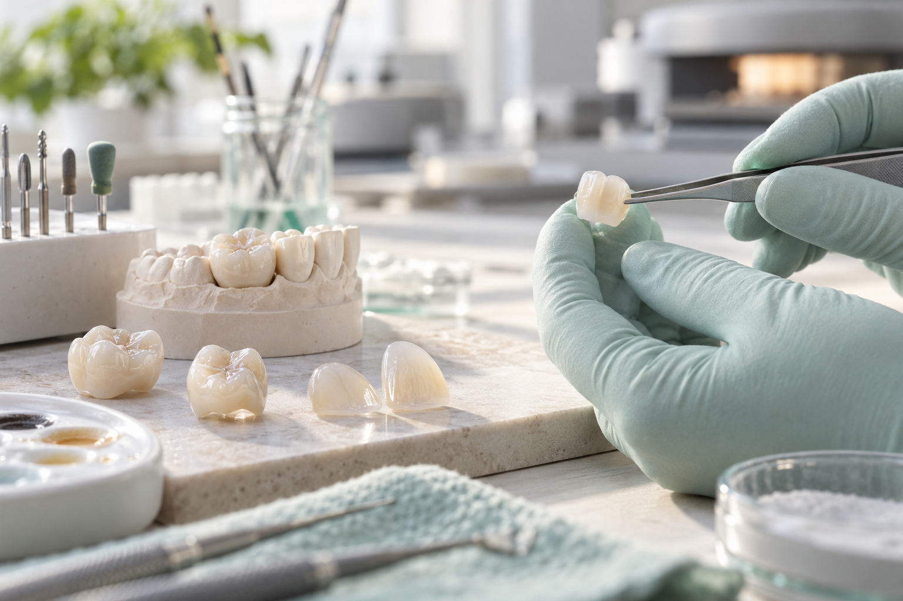
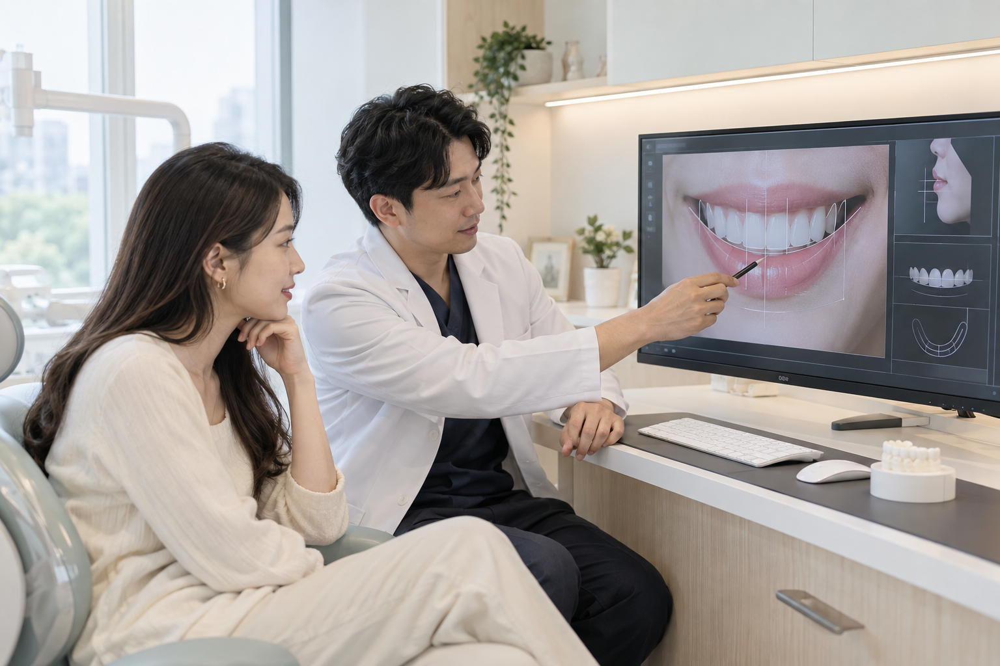
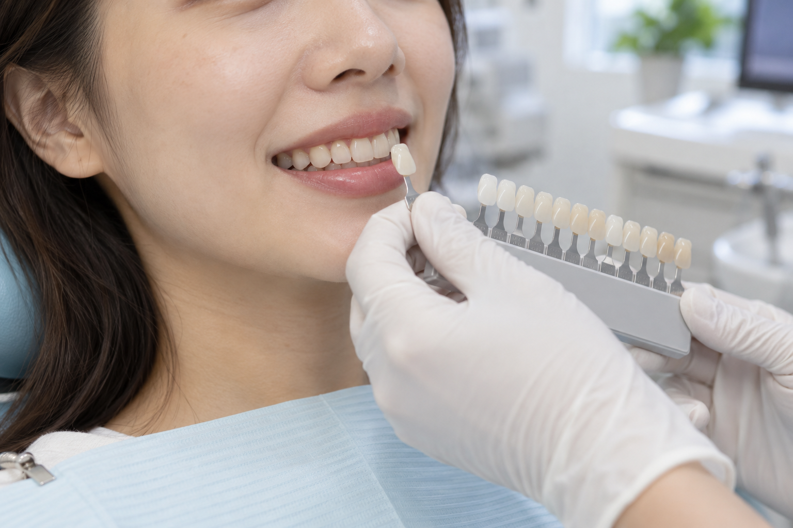

牙齒不整齊，可以直接做貼片嗎？
不一定。若排列或咬合問題較明顯，先矯正可能更能保留自然齒質。
全瓷美學不是把牙齒全部做白，而是先看健康、咬合、齒色與臉部比例，再決定需要修復哪裡、保留多少自然牙齒。
牙齒顏色、形狀、缺角、舊假牙或排列，都可能影響笑容；但不同問題需要的方式不一樣。若有蛀牙、牙周或咬合問題，通常要先處理健康，再談美學。
染色、斑點或舊填補物色差，要先確認能否以清潔、美白或局部修復改善。
缺角、磨耗、比例不協調或牙縫，可評估樹脂、陶瓷貼片或全瓷冠。
若核心問題是牙齒位置，可能先以矯正處理，比大量修磨牙齒更合適。
兩者都可使用陶瓷材料，但覆蓋範圍與目的不同。選擇時不能只看厚薄或價格，而要看剩餘齒質、缺損範圍與咬合力量。
| 方式 | 主要用途 | 評估重點 |
|---|---|---|
| 全瓷冠 | 包覆牙齒較大範圍，用於需要重建外形與保護的牙齒。 | 剩餘齒質、裂紋或缺損、根管治療狀況、咬合與清潔。 |
| 陶瓷貼片 | 覆蓋牙齒正面，調整顏色、形狀或部分縫隙。 | 琺瑯質條件、排列、磨牙習慣、咬合及是否能保守修磨。 |
| 樹脂修復 | 處理較局部的缺角、形狀或色差。 | 缺損大小、染色風險、耐用需求與後續維護。 |

陶瓷修復會一起考量外形、表面紋理、邊緣、透光感與鄰牙關係。材料只是其中一部分，設計、製作與臨床調整同樣重要。
有時只需要局部修復，有時要先美白或矯正；若牙齒已大範圍缺損，才可能需要全瓷冠。實際方式要依檢查與希望改善的範圍一起決定。

醫師可依照片、口腔資料與臉部比例，分析牙齒長寬、笑線、牙齦與嘴唇關係，作為溝通與規劃工具。
蛀牙、牙齦發炎、牙周或根管問題要先確認，不能用陶瓷外觀蓋過疾病。
咬合力量、磨牙與緊咬可能影響修復設計、材料選擇與是否需要保護牙套。
評估齒色、牙齒形狀、笑線、嘴唇與牙齦關係，避免只追求過白或整齊。
醫師會在合適光線下觀察鄰牙顏色、明暗、透明度與表面特徵，讓修復物融入整體笑容，而不是單獨突出。

了解最在意的顏色、形狀、缺損與日常使用情況。
檢查蛀牙、牙周、舊修復物、咬合與剩餘齒質。
依需要拍照、掃描、比色或進行數位微笑分析。
確認外形、顏色、邊緣與咬合，再依計畫完成黏著。
檢查清潔、牙齦、咬合與修復物使用狀況。
陶瓷不會蛀牙，但下方自然牙與邊緣仍需清潔，牙齦健康同樣重要。
不要咬冰塊、硬殼或用牙齒開包裝；有磨牙習慣者依醫師建議保護。
若出現鬆動、裂痕、持續敏感、牙齦不適或咬合改變，應回診評估。
不一定。若排列或咬合問題較明顯，先矯正可能更能保留自然齒質。
通常需要依療程與牙齒條件進行不同程度的修整；範圍必須檢查後說明。
顏色可以討論，但仍要考量膚色、鄰牙與透光感；過白不一定自然。
不是。數位模擬是規劃與溝通工具，實際結果仍受牙齒、牙周、材料與臨床條件影響。
會受剩餘齒質、咬合、磨牙、清潔與回診維護影響，無法只用固定年限保證。
先確認健康、咬合與希望改善的範圍，再討論全瓷冠、貼片、矯正或其他方式。
LINE 預約電話 04-2245-0032